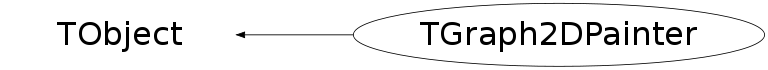

class TGraph2DPainter: public TObject
TGraph2DPainter paints a TGraphDelaunay
Function Members (Methods)
public:
| TGraph2DPainter() | |
| TGraph2DPainter(TGraphDelaunay* gd) | |
| TGraph2DPainter(const TGraph2DPainter&) | |
| virtual | ~TGraph2DPainter() |
| void | TObject::AbstractMethod(const char* method) const |
| virtual void | TObject::AppendPad(Option_t* option = "") |
| virtual void | TObject::Browse(TBrowser* b) |
| static TClass* | Class() |
| virtual const char* | TObject::ClassName() const |
| virtual void | TObject::Clear(Option_t* = "") |
| virtual TObject* | TObject::Clone(const char* newname = "") const |
| virtual Int_t | TObject::Compare(const TObject* obj) const |
| virtual void | TObject::Copy(TObject& object) const |
| virtual void | TObject::Delete(Option_t* option = "")MENU |
| virtual Int_t | TObject::DistancetoPrimitive(Int_t px, Int_t py) |
| virtual void | TObject::Draw(Option_t* option = "") |
| virtual void | TObject::DrawClass() constMENU |
| virtual TObject* | TObject::DrawClone(Option_t* option = "") constMENU |
| virtual void | TObject::Dump() constMENU |
| virtual void | TObject::Error(const char* method, const char* msgfmt) const |
| virtual void | TObject::Execute(const char* method, const char* params, Int_t* error = 0) |
| virtual void | TObject::Execute(TMethod* method, TObjArray* params, Int_t* error = 0) |
| virtual void | TObject::ExecuteEvent(Int_t event, Int_t px, Int_t py) |
| virtual void | TObject::Fatal(const char* method, const char* msgfmt) const |
| virtual TObject* | TObject::FindObject(const char* name) const |
| virtual TObject* | TObject::FindObject(const TObject* obj) const |
| TList* | GetContourList(Double_t contour) |
| virtual Option_t* | TObject::GetDrawOption() const |
| static Long_t | TObject::GetDtorOnly() |
| virtual const char* | TObject::GetIconName() const |
| virtual const char* | TObject::GetName() const |
| virtual char* | TObject::GetObjectInfo(Int_t px, Int_t py) const |
| static Bool_t | TObject::GetObjectStat() |
| virtual Option_t* | TObject::GetOption() const |
| virtual const char* | TObject::GetTitle() const |
| virtual UInt_t | TObject::GetUniqueID() const |
| virtual Bool_t | TObject::HandleTimer(TTimer* timer) |
| virtual ULong_t | TObject::Hash() const |
| virtual void | TObject::Info(const char* method, const char* msgfmt) const |
| virtual Bool_t | TObject::InheritsFrom(const char* classname) const |
| virtual Bool_t | TObject::InheritsFrom(const TClass* cl) const |
| virtual void | TObject::Inspect() constMENU |
| void | TObject::InvertBit(UInt_t f) |
| virtual TClass* | IsA() const |
| virtual Bool_t | TObject::IsEqual(const TObject* obj) const |
| virtual Bool_t | TObject::IsFolder() const |
| Bool_t | TObject::IsOnHeap() const |
| virtual Bool_t | TObject::IsSortable() const |
| Bool_t | TObject::IsZombie() const |
| virtual void | TObject::ls(Option_t* option = "") const |
| void | TObject::MayNotUse(const char* method) const |
| virtual Bool_t | TObject::Notify() |
| void | TObject::Obsolete(const char* method, const char* asOfVers, const char* removedFromVers) const |
| static void | TObject::operator delete(void* ptr) |
| static void | TObject::operator delete(void* ptr, void* vp) |
| static void | TObject::operator delete[](void* ptr) |
| static void | TObject::operator delete[](void* ptr, void* vp) |
| void* | TObject::operator new(size_t sz) |
| void* | TObject::operator new(size_t sz, void* vp) |
| void* | TObject::operator new[](size_t sz) |
| void* | TObject::operator new[](size_t sz, void* vp) |
| TGraph2DPainter& | operator=(const TGraph2DPainter&) |
| virtual void | Paint(Option_t* option) |
| void | PaintContour(Option_t* option) |
| void | PaintErrors(Option_t* option) |
| void | PaintPolyLine(Option_t* option) |
| void | PaintPolyMarker(Option_t* option) |
| void | PaintTriangles(Option_t* option) |
| virtual void | TObject::Pop() |
| virtual void | TObject::Print(Option_t* option = "") const |
| virtual Int_t | TObject::Read(const char* name) |
| virtual void | TObject::RecursiveRemove(TObject* obj) |
| void | TObject::ResetBit(UInt_t f) |
| virtual void | TObject::SaveAs(const char* filename = "", Option_t* option = "") constMENU |
| virtual void | TObject::SavePrimitive(ostream& out, Option_t* option = "") |
| void | TObject::SetBit(UInt_t f) |
| void | TObject::SetBit(UInt_t f, Bool_t set) |
| virtual void | TObject::SetDrawOption(Option_t* option = "")MENU |
| static void | TObject::SetDtorOnly(void* obj) |
| static void | TObject::SetObjectStat(Bool_t stat) |
| virtual void | TObject::SetUniqueID(UInt_t uid) |
| virtual void | ShowMembers(TMemberInspector& insp) |
| virtual void | Streamer(TBuffer& b) |
| void | StreamerNVirtual(TBuffer& b) |
| virtual void | TObject::SysError(const char* method, const char* msgfmt) const |
| Bool_t | TObject::TestBit(UInt_t f) const |
| Int_t | TObject::TestBits(UInt_t f) const |
| virtual void | TObject::UseCurrentStyle() |
| virtual void | TObject::Warning(const char* method, const char* msgfmt) const |
| virtual Int_t | TObject::Write(const char* name = 0, Int_t option = 0, Int_t bufsize = 0) |
| virtual Int_t | TObject::Write(const char* name = 0, Int_t option = 0, Int_t bufsize = 0) const |
protected:
| virtual void | TObject::DoError(int level, const char* location, const char* fmt, va_list va) const |
| void | FindTriangles() |
| void | TObject::MakeZombie() |
| void | PaintLevels(Int_t* T, Double_t* x, Double_t* y, Int_t nblev = 0, Double_t* glev = 0) |
| void | PaintPolyMarker0(Int_t n, Double_t* x, Double_t* y) |
Data Members
public:
| enum TObject::EStatusBits { | kCanDelete | |
| kMustCleanup | ||
| kObjInCanvas | ||
| kIsReferenced | ||
| kHasUUID | ||
| kCannotPick | ||
| kNoContextMenu | ||
| kInvalidObject | ||
| }; | ||
| enum TObject::[unnamed] { | kIsOnHeap | |
| kNotDeleted | ||
| kZombie | ||
| kBitMask | ||
| kSingleKey | ||
| kOverwrite | ||
| kWriteDelete | ||
| }; |
protected:
| TGraphDelaunay* | fDelaunay | Pointer to the TGraphDelaunay to be painted |
| Double_t* | fEX | !Pointer to fGraph2D->fXE |
| Double_t* | fEY | !Pointer to fGraph2D->fYE |
| Double_t* | fEZ | !Pointer to fGraph2D->fZE |
| TGraph2D* | fGraph2D | Pointer to the TGraph2D in fDelaunay |
| Int_t* | fMTried | !Pointer to fDelaunay->fMTried |
| Int_t* | fNTried | !Pointer to fDelaunay->fNTried |
| Int_t | fNdt | !Equal to fDelaunay->fNdt |
| Int_t | fNpoints | !Equal to fGraph2D->fNpoints |
| Int_t* | fPTried | !Pointer to fDelaunay->fPTried |
| Double_t* | fX | !Pointer to fGraph2D->fX |
| Double_t* | fXN | !Pointer to fDelaunay->fXN |
| Double_t | fXNmax | !Equal to fDelaunay->fXNmax |
| Double_t | fXNmin | !Equal to fDelaunay->fXNmin |
| Double_t | fXmax | ! |
| Double_t | fXmin | ! |
| Double_t* | fY | !Pointer to fGraph2D->fY |
| Double_t* | fYN | !Pointer to fDelaunay->fYN |
| Double_t | fYNmax | !Equal to fDelaunay->fYNmax |
| Double_t | fYNmin | !Equal to fDelaunay->fYNmin |
| Double_t | fYmax | ! |
| Double_t | fYmin | ! fGraph2D->fHistogram limits |
| Double_t* | fZ | !Pointer to fGraph2D->fZ |
| Double_t | fZmax | ! |
| Double_t | fZmin | ! |
Class Charts
{kind=link}
{kind=link}
{kind=link}
{kind=link}

Function documentation
void FindTriangles()
Find triangles in fDelaunay and initialise the TGraph2DPainter values needed to paint triangles or find contours.
TList * GetContourList(Double_t contour)
Returns the X and Y graphs building a contour. A contour level may consist in several parts not connected to each other. This function finds them and returns them in a graphs' list.
void Paint(Option_t* option)
Paint a TGraphDelaunay according to the value of "option": "TRI" : The Delaunay triangles are drawn using filled area. An hidden surface drawing technique is used. The surface is painted with the current fill area color. The edges of each triangles are painted with the current line color. "TRIW" : The Delaunay triangles are drawn as wire frame "TRI1" : The Delaunay triangles are painted with color levels. The edges of each triangles are painted with the current line color. "TRI2" : the Delaunay triangles are painted with color levels. "P" : Draw a marker at each vertex "P0" : Draw a circle at each vertex. Each circle background is white. "PCOL" : Draw a marker at each vertex. The color of each marker is defined according to its Z position. "CONT" : Draw contours "LINE" : Draw a 3D polyline
void PaintContour(Option_t* option)
Paints the 2D graph as a contour plot. Delaunay triangles are used to compute the contours.
void PaintLevels(Int_t* T, Double_t* x, Double_t* y, Int_t nblev = 0, Double_t* glev = 0)
Paints one triangle. nblev = 0 : paint the color levels nblev != 0 : paint the grid
void PaintPolyMarker0(Int_t n, Double_t* x, Double_t* y)
Paints a circle at each vertex. Each circle background is white.